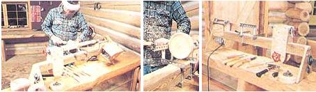
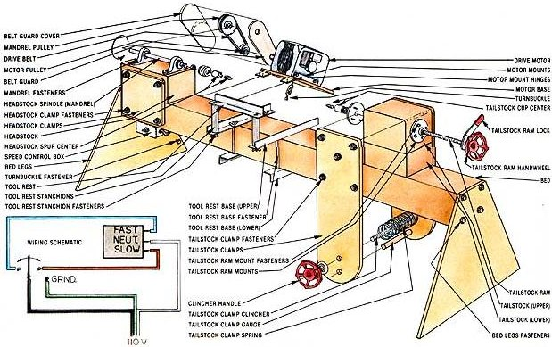
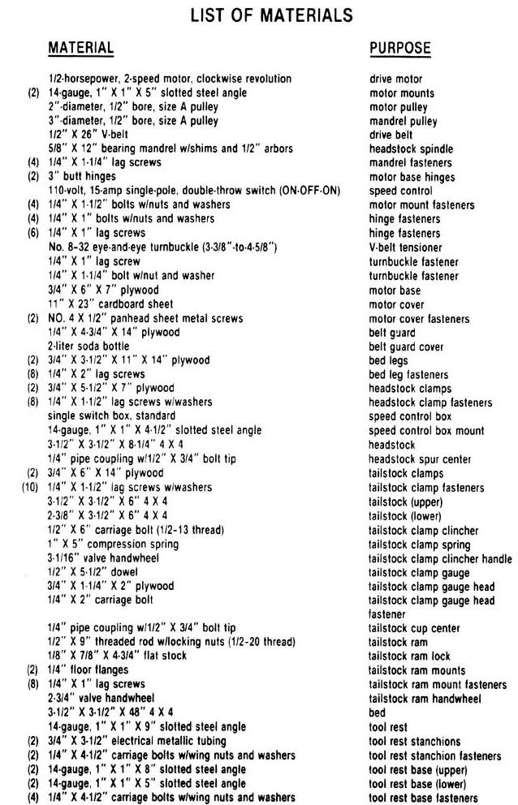

This built for-a-tight-budget project works a lot better than it looks!
For most of us, establishing an effective home workshop is a matter of patiently purchasing equipment over a long period of time. True, new hand tools can ordinarily be acquired quickly, but larger, table-mounted machines are enough of an investment to send the amateur craftsperson off to garage sales in desperate quest of a secondhand bargain.
Consider the wood lathe: The basic models cost more than $300, and even a used piece of equipment commands nearly that price . . . yet the tool is so versatile that it's usually one of the first to find a place in the serious wood shop. Fortunately, a garden-variety lathe-without a lot of fancy features-is such a perfect example of straightforward design that an amateur toolsmith ought to be able to assemble a bargain-basement duplicate all on his or her own. To prove just this point, MOTHER'S researchers Dennis Burkholder and Robyn Bryan tackled the task and came up with the bare-bones, low-budget wood lathe you see here.
WOOD YOU HAVE GUESSED?
At first glance, the fellows' rustic interpretation of the familiar machine tool appears to be little more than a toy. But a few of our staffers with some woodworking experience to their credit have put the lathe through a number of trials, and the consensus is that the timber-framed woodturner is fully capable of handling most of the basic shaping and finishing jobs encountered by the casual crafter . . . at least until he or she can afford a more conventional machine.
As you can see from the photos, our budget lathe's bed is just a length of pressure-treated 4 X 4 supported by two short 3/4·'plywood legs (we recommend treated lumber for the 4 X 4, because it's generally heavier and truer than its unprocessed counterpart). The headstock consists of a bearing mandrel mounted on a 4 X 4 spacer, and the tailstock is similarly arranged . . . except that its center is fastened to a threaded-rod ram equipped with a handwheel. The headstock spindle is driven, through a V-belt, by a two-speed washing machine motor . . . and the tool rest is an adjustable framework of slotted steel angle clamped to the bed.
Just to see how much the lathe's component parts would come to if every-thing-excluding the motor, which was a used one-were bought right off the hardware store's shelves, we itemized its every piece and came up with a grand total of $57.16. However, since Dennis and Robyn actually assembled the tool largely from odds and ends around the shop (a feat that probably wouldn't be all that difficult to duplicate in your own workspace), the entire lathe lightened our till by only $35 or so. Of course, the motor drive-if purchased new-would run at least $50. But it's easy to salvage a working unit from a retired clothes washer instead (ours cost a mere $10).
LAUNDRY-ROOM LARCENY
If you're interested in putting together your own low-buck lathe, you'll first have to come up with a 1/2-horsepower, two-speed washing machine motor with a clockwise rotation (looking at it from the shaft end). Our split-phase model, taken from a Whirlpool, spins at 1,725 and 1,140 revolutions per minute (RPM), though a similar reversible motor with dual-speed capability (found in some Norge, Speed Queen, Whirlpool, Kenmore, and Maytag washers) would work as well, providing you wired it to spin in the correct direction. Other major parts you'll need to acquire are a bearing mandrel with 1/2" arbors . . . a straight, 6', pressure-treated 4 X 4 . . . and pulleys to fit the motor and mandrel shafts that will yield a step-down of between 2/3 and 3/4 speed. (Our 2" motor pulley drives a 3" mandrel wheel, so our step-down factor is .666, or 2/3.)
Once you've collected these key components, you can scrounge, make, or buy the remaining parts called for in the list of materials . . . and proceed to assemble the bed. The 3/4"-plywood legs are simply glued and lag-screwed to the ends of a 4' section of your 4 X 4, and the motor base is hinged from beneath the bed in what will be the lathe's left rear corner. At this point, you can cut what's left of the 4 X 4 into one 8-1/4" and two 6" lengths, and glue the longest of those pieces to the top of the bed at the motor end to serve as a headstock. Two headstock clamps-made from 314" X 5-1/2" X 7" hunks of plywood-hold that block to the bed on each side.
The bearing mandrel bolts directly into the surface of the headstock, perfectly parallel to the length of the bed and in such a way that its tips completely clear the ends of the stock. With the larger pulley temporarily placed on the mandrel shaft, you can then position the motor for mounting by using the angle brackets, smaller pulley, and estimated belt length as your guides.
Once the motor's fastened to the hinged platform, it's a simple matter to select and install a drive belt of the proper length. Afterward, a small eye-and-eye turnbuckle can be bolted between the plywood base and the leg below it to provide incremental adjustment as the drive belt stretches. But don't just leave it at that: A belt guard-made from an oblong-cut piece of 1/4" plywood, with appropriate holes created for the motor and mandrel shafts-ought to be glued and tacked to the end of the headstock . . . and a suitable cover (we used a two-liter plastic soft-drink bottle that was cleaved and then overlapped in the middle) should be similarly fastened to the edges of that wooden plate. Finish up the drive system by shielding the motor with a cardboard cover screwed to its base . . . wiring its leads through a single-pole, double-throw toggle switch as shown in the accompanying schematic . . . and mounting that two-speed control in a standard switch box hung beneath the bed.
A TALL TAIL
To allow the lathe to accept spindles of varying lengths, the tailstock must be able to slide along the bed and lock in any given position. We provided for this by mounting elongated plywood clamps to the glued together tailstock blocks and then using a simple bolt-and-wheel to pinch the bed between those grips. A compression spring sandwiched inside the cinch and around the bolt pushes the clamps open, and a simple tension gauge (made from a length of 1/2" dowel attached to one clamp and passed through a hole in the other) indicates the degree of grip.
The tailstock ram is nothing more than a 1/2" X 9" section of threaded rod held to the stock with two 1/4" floor flanges. We first tapped these mounts to accept the rod's 1/2-20 thread, then bored a 3/4" hole through the 6"-long upper tailstock block 1-5/16 inches below its top surface and centered between its two sides. The lower tailstock block, whose dimensions should be approximately 2-3/8" X 31/2" X 6", dictates the height of the tailstock center, though the oversized ram hole allows for a lot of fine adjustment. Of course, your ultimate goal here is to set the head- and tailstock centers on an equal plane for accurate turning, so you may have to alter the given dimensions slightly to match the height of your particular mandrel's center.
When the floor flanges are bolted in place over the tailstock hole with the ram installed, you can attach the ram lock and handwheel. The lock is a piece of 1/8" flat stock drilled and tapped to match the threaded rod and offset to form a convenient handle. The tailstock ram wheel is, like that of the clamp, just a drive motor motor mounts motor pulley mandrel pulley drive belt headstock spindle mandrel fasteners motor base hinges speed control motor mount fasteners hinge fasteners hinge fasteners V-belt tensioner turnbuckle fastener turnbuckle fastener motor base motor cover motor cover fasteners belt guard belt guard cover bed legs bed leg fasteners headstock clamps headstock clamp fasteners speed control box speed control box mount headstock headstock spur center tailstock clamps tailstock clamp fasteners tailstock (upper) tailstock (lower) tailstock clamp clincher tailstock clamp spring tailstock clamp clincher handle tailstock clamp gauge tailstock clamp gauge head tailstock clamp gauge head fastener tailstock cup center tailstock ram tailstock ram lock tailstock ram mounts tailstock ram mount fasteners tailstock ram handwheel bed tool rest tool rest stanchions tool rest stanchion fasteners tool rest base (upper) tool rest base (lower) tool rest base fasteners valve handwheel red-rilled and given a set of threads. A 1/2" nut torqued against it prevents it from turning on the ram.
Any kind of spindle-turning requires spur and cup centers to hold the work between the head- and tailstocks. We made inexpensive ones out of pipe couplings and bolts by crosscutting teeth into one end of a 1/4" pipe coupling, and rethreading that and an unaltered fitting to accept the ram and mandrel studs. We then obtained matching bolts and-after cutting their heads off, slotting their bodies, and grinding their tips to a point-ran them through the cores to create both a headstock spur center able to grip and spin a billet and a tailstock cup center adequate for holding it in true.
Faceplate-turning, on the other hand, calls for a flat-surfaced fitting that screws directly to the end of the mandrel and is able to hold a work-piece by itself. We found that various-sized floor flanges that were bushed and rethreaded to fit the driven shaft served that purpose well.
Last but not least, the lathe needs a tool rest. We'll admit that our simple example could be improved upon without adding a whole lot of expense to the project . . . but the elementary rest we settled upon does function well if it's tightened properly. It's merely a piece of slotted steel angle that's supported on two 3/4" conduit posts . . . which in turn are bolted to adjustable clamps fabricated from unequal lengths of the same perforated material that's used for the rest itself. Sections of angle iron of a similar size would also work, but you'd have to drill a series of holes through their flats to accommodate the various-sized work-pieces you're likely to encounter while using the machine. In either case, every metal edge should be filed smooth to prevent accidental cuts while you're working or resetting the tool rest.
LOOK BEFORE YOU LEAP
Before you "fire up" your assembled unit, remember that, although this tool only cost about a tenth of what a commercial model would, its 1/2-horsepower motor makes it just as powerful. So take the time to bolt its legs permanently to a solid work platform, and always wear eye protection (but never loose clothing, belts, or jewelry) when turning. In addition, make certain that the work revolves toward you, and check to see that each billet will clear the bed and tool rest by rotating it once by hand prior to engaging the motor. (The maximum swing with both faceplate and spindle turnings is 4-1/2 inches, and the distance between centers can be up to 30 inches.) Moreover, always use sharp chisels, and rough out your raw billets at the slowest speed . . . then switch up to high RPM for finer work. The speed ratio mentioned earlier will yield 760 and 1,150 RPM with a two-speed motor.
If you're a wood-turning novice, you'd also do well to research the craft before cutting (Sears, Roebuck & Co. markets a book titled Power Tool Know How , Catalog No. 9-2918 in their Craftsman line, that covers the use of many table tools). Even if you're an old hand, remember to be cautious around your equipment. After all, common sense is the first tool any craftsperson should rely upon.
|
 LEFT TO RIGHT Spindles?such as this table leg?up to 30 inches long can be turned down accurately . . . . By installing a faceplate and moving the tool rest, you can make bowls, too . . . . It may not be high-tech, but it's perfectly functional. |
 |
 |